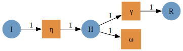
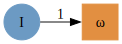

Being open and FAIR in modeling infectious diseases for decision support
Simon Frost
Principal Data Scientist, Microsoft Premonition &
Professor of Pathogen Dynamics, LSHTM

 simon.frost@lshtm.ac.uk
simon.frost@lshtm.ac.uk
 @sdwfrost
@sdwfrost  http://github.com/sdwfrost
http://github.com/sdwfrost
FAIR principles of open science
- Findable
- Accessible
- Interoperable
- Reproducible
- Often a condition of grant funding
Going beyond FAIR
- FAIR principles are often achieved through engineering practices
- GitHub, Docker, notebooks, APIs
- In this talk, I’ll discuss how we can might make models replicable rather than just reproducible
- Ultimate goal: making complex models, their development, and their
role in decision support more transparent (at least to experts)
- Kevin McConway described this as ‘intelligent transparency’
Routes to transparency
- New UKRI project ‘Building a toolkit for epidemiological models’
- Make models composable
- Build complex models from simple ones, as simple ones are easier to understand
- Extend these models to optimal control routinely
- Modeling lays assumptions out
- Increase preparedness as well as improve response times to modify models
- This talk will describe what tools (developed by others) available today can do
Reverse engineering models is hard
- Why hard?
- We only see the final product, not the development pathway of the model
- Models can be complex (Michael Plank mentioned a ‘Frankenstein’s monster’)
- It is often hard to see how the model could be simplified or extended
- A bottom-up approach, where we make complex models from simple ones
is easier to understand
- Reflects the thought process during modeling
- ‘Show your working’
Epiverse-TRACE epidemics
- The R package
epidemicsfrom the Epiverse-TRACE team is described as ‘composable epidemic scenario modeling’ - Demographics, contact structures and interventions can all be
interchanged, but this is achieved by building a large, complex generic
model
- Modular, but not composable
Applied category theory (ACT) as a tool for composing models
- Mathematical concepts from category theory have been proposed as tools to help ‘add’ and ‘multiply’ models
- Barriers
- The terminology, resulting in a steep learning curve
- I’ll try to highlight connections to epidemiology
- Applications of ACT to modeling dynamical systems are recent developments
- Software implementations were lacking
- DARPA funding e.g. ‘Automating Scientific Knowledge Extraction and Modeling’ (ASKEM) program
- The terminology, resulting in a steep learning curve
Connections between ACT and epidemiology
| Term | Definition | Example in epidemiology |
|---|---|---|
| Category | Includes “objects” representing entities or states and “arrows” (morphisms) representing transitions or relationships between entities. | Objects: different disease states of an individual (Susceptible, Infected, Recovered). |
| Morphism | A mapping, function or transformation from one object to another. | The transformation of a person from a susceptible state to an infected state. |
| Domain | The object from which the arrow or morphism originates. | For an arrow representing transmission, the domain would be the susceptible state. |
| Codomain | The object to which the arrow points. | For an arrow representing transmission, the codomain would be the infected state. |
(More examples at https://github.com/epirecipes/EpiCats)
An SIR example
- Consider a category \(C\)
- Objects representing the potential states of the system \((S, I, R)\).
- Morphisms representing transitions (infection, recovery)
- The functor \(X: C \to
\mathbf{Set}\) is known as a C-Set (or a copresheaf on C) has two
components:
- Object mapping: e.g. map the object \(\text{S}\) (Susceptible) to the set \(X(\text{S})\) of all susceptible individuals.
- Function mapping: e.g. map the morphism
infectionto a function \(X(\text{infection})\) representing the infection process.
Whole grain Petri nets
Composing models
- Define a labelled Petri net with transitions
- Create a wiring diagram (model agnostic!)
- Apply the wiring diagram to the Petri net to create an attributed C set (ACSet)
- Extract the Petri net from the ACSet
Example: adding hospitalization to an SIR model
- Let’s say we have an SIR model already implemented and we want to
extend the model to one where the pathogen is more virulent
- Hospitalization of infected individuals
- Death of infected and hospitalized individuals
- ACT provides a formalism to glue models together
Defining a model


Component models
 
Glueing models together

Stratifying models
- Where the real power of this approach becomes apparent is when stratifying models
- Consider:
- Age groups
- Risk groups
- Spatial locations
- Vaccine doses
- Strains
COEXIST
Stratification approach
- Choose component models
- Choose which compartments will be stratified
- Generate product of models
- Example: replicating the ‘default model’ from the R
epidemicspackage- Age structured SEIRV model
Component models
(The above was generated by a function
make_age_groups(3))
Choosing how to stratify

Taking the product
Generation of ODEs
\[ \begin{align} \frac{\mathrm{d} S_{a2}\left( t \right)}{\mathrm{d}t} =& - \left( I_{a2}\left( t \right) S_{a2}\left( t \right) \beta_{a2\_a2} + S_{a2}\left( t \right) I_{a1}\left( t \right) \beta_{a2\_a1} + S_{a2}\left( t \right) I_{a3}\left( t \right) \beta_{a2\_a3} \right) \\ \frac{\mathrm{d} I_{a2}\left( t \right)}{\mathrm{d}t} =& E_{a2}\left( t \right) \sigma_{a2} + S_{a3}\left( t \right) I_{a2}\left( t \right) \beta_{a3\_a2} + S_{a1}\left( t \right) I_{a2}\left( t \right) \beta_{a1\_a2} + I_{a2}\left( t \right) S_{a2}\left( t \right) \beta_{a2\_a2} - \left( I_{a2}\left( t \right) \gamma_{a2} + S_{a3}\left( t \right) I_{a2}\left( t \right) \beta_{a3\_a2} + S_{a1}\left( t \right) I_{a2}\left( t \right) \beta_{a1\_a2} + I_{a2}\left( t \right) S_{a2}\left( t \right) \beta_{a2\_a2} \right) \\ \frac{\mathrm{d} E_{a2}\left( t \right)}{\mathrm{d}t} =& I_{a2}\left( t \right) S_{a2}\left( t \right) \beta_{a2\_a2} + S_{a2}\left( t \right) I_{a1}\left( t \right) \beta_{a2\_a1} + S_{a2}\left( t \right) I_{a3}\left( t \right) \beta_{a2\_a3} - E_{a2}\left( t \right) \sigma_{a2} \\ \frac{\mathrm{d} R_{a2}\left( t \right)}{\mathrm{d}t} =& I_{a2}\left( t \right) \gamma_{a2} \\ \frac{\mathrm{d} S_{a3}\left( t \right)}{\mathrm{d}t} =& - \left( S_{a3}\left( t \right) I_{a2}\left( t \right) \beta_{a3\_a2} + S_{a3}\left( t \right) I_{a1}\left( t \right) \beta_{a3\_a1} + S_{a3}\left( t \right) I_{a3}\left( t \right) \beta_{a3\_a3} \right) \\ \frac{\mathrm{d} I_{a3}\left( t \right)}{\mathrm{d}t} =& E_{a3}\left( t \right) \sigma_{a3} + S_{a3}\left( t \right) I_{a3}\left( t \right) \beta_{a3\_a3} + S_{a1}\left( t \right) I_{a3}\left( t \right) \beta_{a1\_a3} + S_{a2}\left( t \right) I_{a3}\left( t \right) \beta_{a2\_a3} - \left( I_{a3}\left( t \right) \gamma_{a3} + S_{a3}\left( t \right) I_{a3}\left( t \right) \beta_{a3\_a3} + S_{a1}\left( t \right) I_{a3}\left( t \right) \beta_{a1\_a3} + S_{a2}\left( t \right) I_{a3}\left( t \right) \beta_{a2\_a3} \right) \\ \frac{\mathrm{d} E_{a3}\left( t \right)}{\mathrm{d}t} =& S_{a3}\left( t \right) I_{a2}\left( t \right) \beta_{a3\_a2} + S_{a3}\left( t \right) I_{a1}\left( t \right) \beta_{a3\_a1} + S_{a3}\left( t \right) I_{a3}\left( t \right) \beta_{a3\_a3} - E_{a3}\left( t \right) \sigma_{a3} \\ \frac{\mathrm{d} R_{a3}\left( t \right)}{\mathrm{d}t} =& I_{a3}\left( t \right) \gamma_{a3} \\ \frac{\mathrm{d} S_{a1}\left( t \right)}{\mathrm{d}t} =& - \left( S_{a1}\left( t \right) I_{a2}\left( t \right) \beta_{a1\_a2} + S_{a1}\left( t \right) I_{a1}\left( t \right) \beta_{a1\_a1} + S_{a1}\left( t \right) I_{a3}\left( t \right) \beta_{a1\_a3} \right) \\ \frac{\mathrm{d} I_{a1}\left( t \right)}{\mathrm{d}t} =& E_{a1}\left( t \right) \sigma_{a1} + S_{a3}\left( t \right) I_{a1}\left( t \right) \beta_{a3\_a1} + S_{a1}\left( t \right) I_{a1}\left( t \right) \beta_{a1\_a1} + S_{a2}\left( t \right) I_{a1}\left( t \right) \beta_{a2\_a1} - \left( I_{a1}\left( t \right) \gamma_{a1} + S_{a3}\left( t \right) I_{a1}\left( t \right) \beta_{a3\_a1} + S_{a1}\left( t \right) I_{a1}\left( t \right) \beta_{a1\_a1} + S_{a2}\left( t \right) I_{a1}\left( t \right) \beta_{a2\_a1} \right) \\ \frac{\mathrm{d} E_{a1}\left( t \right)}{\mathrm{d}t} =& S_{a1}\left( t \right) I_{a2}\left( t \right) \beta_{a1\_a2} + S_{a1}\left( t \right) I_{a1}\left( t \right) \beta_{a1\_a1} + S_{a1}\left( t \right) I_{a3}\left( t \right) \beta_{a1\_a3} - E_{a1}\left( t \right) \sigma_{a1} \\ \frac{\mathrm{d} R_{a1}\left( t \right)}{\mathrm{d}t} =& I_{a1}\left( t \right) \gamma_{a1} \end{align} \]
Benefits
- Mathematical language (and associated implementation in code) to add and multiply models
- Easy to simplify a model, to extend, to swap out components
- Aids in reusability (preparedness) and in transparency (accountability)
- Under active development
- Kris Brown and Sean Wu are developing algebraic agent based models
- How (best) to represent interventions?
Optimizing policy
- Much interest in comparing interventions
- Many studied considered a small set of interventions
- Fewer used optimal control to identify the ‘best’ one
- Many optimal control papers published during the pandemic used
indirect methods
- Numerical results were often tuned too e.g. for ‘bang-bang’ interventions
- While analytical results are preferable, they may not be easily
derived on a short timescale
- Can we automate numerical approaches for optimal control?
Techniques for optimal control
- Indirect methods, requiring more (manual) mathematical analysis but
allowing proofs
- Pontryagin’s maximum principle
- Hamilton–Jacobi–Bellman equation
- Direct methods, numerical approaches that can be automated
- Discretize the model and treat as a nonlinear program (NLP)
Barriers against use of NLP solvers
- Mathematical solvers are used extensively in logistics, supply
chain, etc., but less widely used in epidemiology
- Cost?
- Ease of use?
- Lack of awareness?
- Initial exploration: direct method using mathematical optimization
of nonlinear programs
- How much effort to port compartmental models to integrate them with solvers?
- Can we use free solvers?
- Does the solver get the right answer (or even an answer at all)?
- Is it fast enough to be useful?
Nonlinear programs
\[ \text{minimize} \quad f(x) \] \[ \text{subject to} \quad g_i(x) \leq 0 \quad \forall i \in \{1, \ldots, m\} \] \[ h_j(x) = 0 \quad \forall j \in \{1, \ldots, p\} \] \[ x_L \leq x \leq x_U \]
- \(f(x)\) is the objective function, which is nonlinear and can be non-convex.
- \(g_i(x)\) are inequality constraints, which can also be nonlinear.
- \(h_j(x)\) are equality constraints, which can be nonlinear as well.
- \(x_L\) and \(x_U\) are the lower and upper bounds on the decision variables \(x\).
Components
- Objectives:
- Reduce total infected
- Flatten the curve
- Reduce peak infected
- Interventions
- Contact reduction
- Vaccination
Model formulation
- Discretized equations of dynamics can be written as nonlinear constraints, resulting in an NLP
- Solved using Ipopt, a free NLP solver
- Models written using a domain-specific language, JuMP
- Alternatives include AMPL, GAMS, Pyomo…(not one for R, sorry…)
Reduce contact rate
\[ \begin{align*} \dfrac{\mathrm dS}{\mathrm dt} &= -\beta (1 - \upsilon(t)) S I, \\ \dfrac{\mathrm dI}{\mathrm dt} &= \beta (1 - \upsilon(t)) S I - \gamma I,\\ \dfrac{\mathrm dC}{\mathrm dt} &= \beta (1 - \upsilon(t)) S I\\ \end{align*} \]
Writing the model as expressions and constraints

Aside: a domain specific language for differentiation/integration
- There is a (Julia only) package,
InfiniteOpt.jl, that allows constraints to be specified in terms of derivatives and integrals- Discretization occurs ‘under the hood’
Reducing total infected
- Minimise \(C(\infty)\)
- Subject to:
- \(\nu(t) \leq \nu_{max}\)
- \(\int \nu(t) dt \leq \nu_{total}\)
- Britton and Leskela (2023) have proven that the optimal policy is a single ‘bang-bang’ intervention
NLP closely matches the analytical optimum

Flattening the curve
- Minimise total cost of intervention while keeping infected individuals below a pre-specified level
- Miclo et al. (2022) demonstrated that the optimal control is in three stages; wait, maintain, and relax
Numerical results for flattening the curve

Vaccination
\[ \begin{align*} \dfrac{\mathrm dS}{\mathrm dt} &= -\beta S I - \upsilon(t) S, \\ \dfrac{\mathrm dI}{\mathrm dt} &= \beta S I - \gamma I,\\ \dfrac{\mathrm dC}{\mathrm dt} &= \beta S I\\ \end{align*} \]
Optimal vaccination
- The optimal approach is to vaccinate as early as possible

Results
- Ipopt, a free nonlinear solver, can reproduce analytical results on
optimal policies quickly, with little tuning
- Despite not ‘knowing’ about the time series nature of the model (although smoothness penalties can easily be added)
- Fast enough for uncertainty analysis across many parameter values
- Initial conditions (based on the absence of interventions) reduced computational time
- The accuracy of the discretization did not appear to matter too much
- Simple Euler vs. second-order model
Issues with solvers
- Not all NLP solvers allow nonlinear equalities/inequalities
- e.g. NLopt, SCIP
- Some solvers fail to find a solution at all
- e.g. Bonmin
- Some solvers are much slower than others
- e.g. MAinGO
- Some solvers returned suboptimal solutions
Issues with models
- Too coarse discretization
- Trade-off with runtime
- Minimising duration of intervention can be more difficult
- Turns NLP into a mixed integer (MINLP) problem
- Can be either much faster (bang-bang intervention) or much slower
Alternative approaches to NLP solvers
- Deep learners for \(u(t)\) get
stuck in local minima
- ‘Smooth’ policies such as vaccination can be fitted
- Non-pharmaceutical interventions are harder
- (Partially observed) Markov decision processes struggle with final size limitation
- Yet to find a good representation of the problem for reinforcement learning
Conclusions
- Applied category theory (ACT) is a promising method to ‘show your
working’ when building complex models, making models more re-usable and
transparent
- Offers compositionality, abstraction, and formalism
- Writing deterministic models (ODEs/maps) as nonlinear programs can
quickly identify optimal policies
- Great as a ‘hypothesis generating’ approach
- We’re trying to build an automated framework that works quickly for all model types and interventions
- Potential to apply ACT to optimal control and data inputs and combine with transmission models in a single framework
Links
- http://github.com/epirecipes/EpiCats
- http://epirecip.es (Outdated)
- http://github.com/epirecipes/sir-julia
- ACT for ODEs by Sophie Libkind and for stock flow models
- Optimal control examples
- Emulators
- Probabilistic programming languages (Turing, Gen, RxInfer)
- ABC
Acknowledgements
- Tom Britton, for piquing my interest in optimising policies
- Sean Wu, for lots of contributions to Epirecipes
- Oscar Dowson, for help with JuMP
- Micah Halter, Sophie Libkind, James Fairbanks and the AlgebraicJulia community
- U.K. Medical Research Council ‘Better Methods, Better Research’ for
funding
- Roz Eggo (LSHTM), Mike Gravenor and Ashley Akhbari (Swansea U.)
Thanks!
simon.frost@lshtm.ac.uk
@sdwfrost
http://github.com/sdwfrost
Possibly of interest:
http://microsoft.com/premonition
http://digitalbiome.org